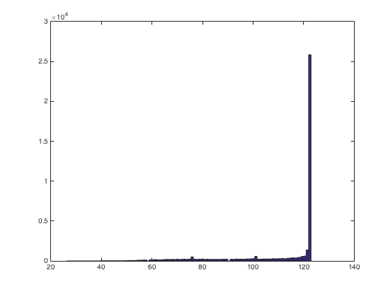
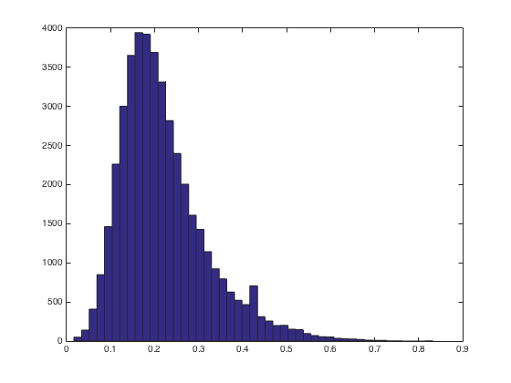
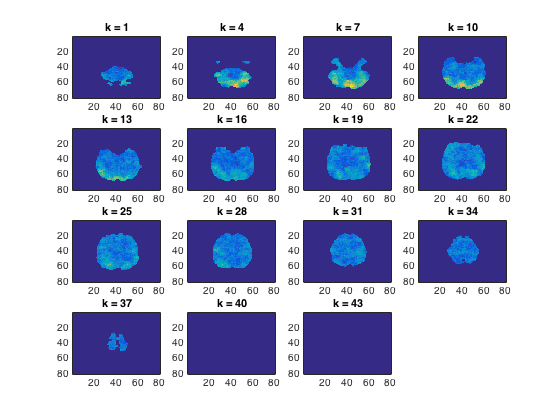

Searchlight using a data measure
Using cosmo_searchlight, run cross-validation with nearest neighbor classifier
- For CoSMoMVPA's copyright information and license terms, #
- see the COPYING file distributed with CoSMoMVPA. #
Contents
Define data
config=cosmo_config(); data_path=fullfile(config.tutorial_data_path,'ak6','s01'); targets=repmat(1:6,1,10); chunks=floor(((1:60)-1)/6)+1; ds = cosmo_fmri_dataset(fullfile(data_path,'glm_T_stats_perrun.nii'),... 'mask',fullfile(data_path, 'brain_mask.nii'), ... 'targets',targets,'chunks',chunks);
Set measure
Use the cosmo_cross_validation_measure and set its parameters (classifier and partitions) in a measure_args struct. >@@>
measure = @cosmo_crossvalidation_measure;
measure_args = struct();
measure_args.classifier = @cosmo_classify_lda;
measure_args.partitions = cosmo_oddeven_partitioner(ds);
% <@@<
Define neighborhood
radius=3; % 3 voxels % define a neighborhood using cosmo_spherical_neighborhood % >@@> nbrhood=cosmo_spherical_neighborhood(ds,'radius',radius); % <@@< % show a histogram of the number of voxels in each searchlight % >@@> count=cellfun(@numel,nbrhood.neighbors); hist(count,100); % <@@<
+00:00:08 [####################] -00:00:00 mean size 111.5
Run the searchlight
hint: use cosmo_searchlight with the measure, args and nbrhood
% >@@> results = cosmo_searchlight(ds,nbrhood,measure,measure_args); % <@@< % the following command would store the results to disk: % >> cosmo_map2fmri(results, [data_path 'measure_searchlight.nii']);
+00:05:06 [####################] -00:00:00
Make a histogram of classification accuracies
figure() hist(results.samples,47)
Plot a map
figure(); cosmo_plot_slices(results);